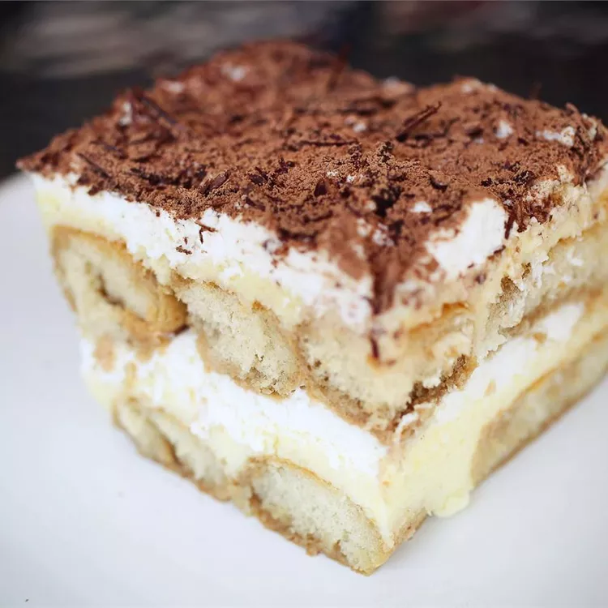

How to make a great Tiramisu

Ingredients
- Egg yolks: Egg yolks are essential for a thick, rich, velvety smooth filling. Though some traditional recipes use raw eggs, this one doesn't — raw eggs carry the risk of food-borne illness.
- Sugar: White sugar is cooked with egg yolks and combined with mascarpone to create a sweet, creamy filling.
- Cream: Beat heavy cream until stiff peaks form to create an irresistible whipped cream.
Steps
- Make the filling Cook the egg yolks, sugar, and milk until slightly thickened. Let cool slightly, then chill in the fridge for about an hour. When the filling has fully chilled, mix in mascarpone cheese.
- Make the whipped cream Beat heavy cream with vanilla extract until stiff peaks form.
- Soak the ladyfingers Combine coffee and rum in a small bowl. Pour mixture over ladyfingers that have been split in half lengthwise.